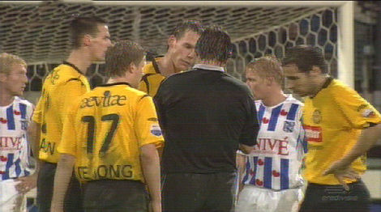
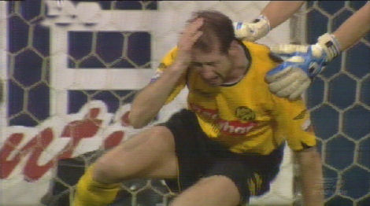
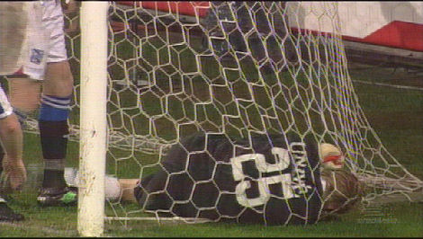
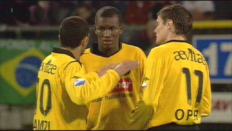
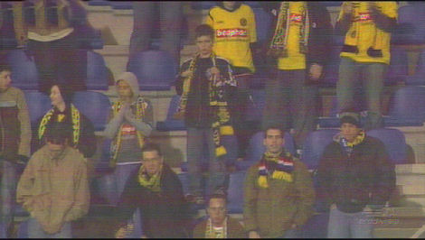
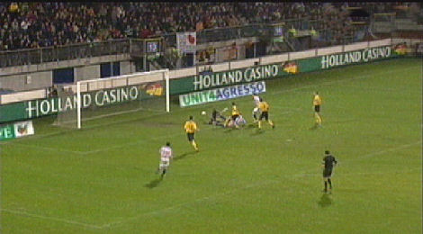

|
SC
Heerenveen - Roda JC (1-0) 8 december 2006
|

Protesten bij de scheidsrechter nadat doelman Vandenbussche, Ramzi onderuit
heeft gelopen.

Senden heeft een schoen tegen zijn hoofd gekregen.

Na een ultieme redding belandt Vandenbussche verstrikt in zijn eigen touwen.

Hoe gaan we ooit scoren jongens....

Op een vrijdagavond naar Heerenveen voor een pot baggervoetbal. Je moet het er
maar voor over hebben....

Het doelpunt van Tarvajärvi in de 87e minuut. Dit vond Dagblad De Telegraaf er van:
Tarvajärvi schiet Heerenveen langs Roda JC
HEERENVEEN - SC Heerenveen won vrijdagavond met
1-0 van Roda JC. Maar het zag er lang naar uit dat de Friezen
zichzelf met een doelpuntloos gelijkspel tekort zouden doen. De
Finse invaller Niklas Tarvajärvi bezorgde de ploeg van Gertjan
Verbeek op de valreep toch nog drie punten.
Thomas Prager was de vervanger van de zieke Paul Bosvelt.
De thuisclub was in het eerste uur oppermachtig. De Oostenrijkse
international Thomas Prager, die de zieke Paul Bosvelt verving,
kreeg na drie minuten de eerste kans. Kort na de knal van Prager had
verdediger Michael Dingsdag een vrije kopkans. Na ruim een kwartier
kon aanvoerder Petter Hansson bij de tweede paal zomaar intikken. In
beide gevallen was doelman Vladan Kujovic, die in de beginfase een
onzekere indruk maakte, al gezien.
Danijel Pranjic was niet in staat te scoren uit een kansrijke
positie.
Heerenveen had verreweg het meeste balbezit, maar kwam maar niet tot
scoren. Alles ging naast of werd van de doellijn gered. Kujovic
kreeg genoeg te doen om in de wedstrijd te groeien. Opmerkelijk
genoeg kwam Afonso Alves, topschutter in de eredivisie, niet in
scoringspositie.
De Braziliaan stelde na ruim een half uur wel heel knap Danijel
Pranjic in staat om de openingstreffer te maken. Maar de Kroatische
linkspoot trof Kujovic op zijn weg. Jakob Poulsen schoof de bal vijf
minuten voor de rust wel langs Roda's doelman, maar wederom werd de
bal voor de lijn weggewerkt.
Afonso Alvez, topscorer in de eredivisie, kon dit keer niet het net
vinden.
Op slag van rust kreeg Roda een prachtkans. Adil Ramzi was vrij op
weg naar het doel. De uitgekomen doelman Brian Vandenbussche haalde
hem buiten het strafschopgebied onderuit en kwam er met een gele
kaart genadig van af. De vrije trap ging over.
Na ruim een uur zakte het spel van Heerenveen helemaal in. De
Friezen leken leeggespeeld en Roda werd steeds gevaarlijker. Michel
Breuer voorkwam ternauwernood dat de ploeg van Huub Stevens zelfs op
voorsprong kwam. Niklas Tarvajärvi stond nog maar net in het veld
toen hij vlak voor tijd de bal toch achter Kujovic kreeg.
© Koempels Pleasure Dome
|